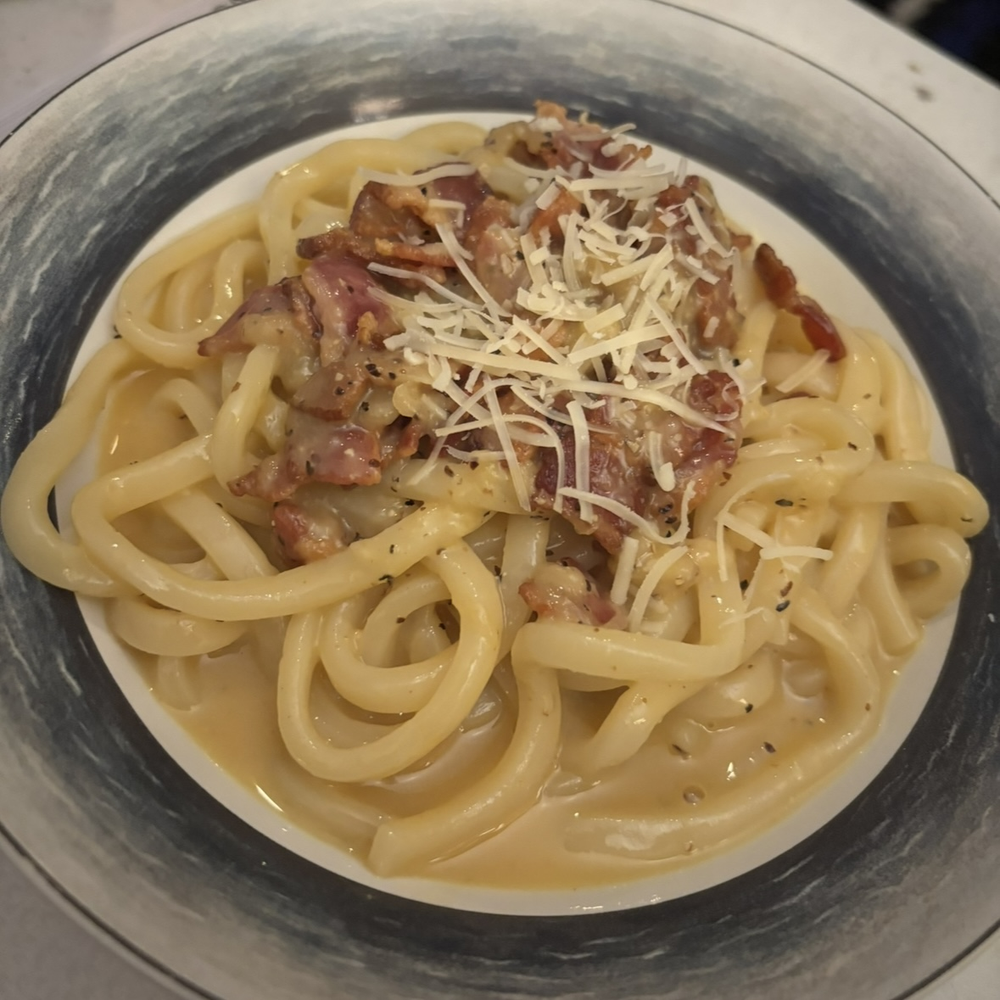

Udon Miso Carbonara
Home

Udon Miso Carbonara
Udon Miso Carbonara is a delicious, creamy dish that combines
the flavor of umami miso with cheesy, savory carbonara. Thick
udon noodles come together with a miso carbonara sauce to create
an easy and comforting meal that comes together in under 20 minutes.
You probably have most of the ingredients already!
Makes 2 Servings
Ingredients
4 slices thick cut bacon chopped
1 lb udon noodles
3 large egg yolks
3 whole large eggs
1 ¼ cup grated Parmesan
1 ½ tablespoon red or white miso paste
2 cloves garlic minced
¼ teaspoon black pepper
Reserve 1 cup of cooked udon water
- Cook the bacon and garlic. in a skillet on
medium-high heat. Bacon should be chopped into about 1/4 inch pieces.
Render bacon for about 5-7 minutes until crisp and then add garlic
and saute until golden brown. Remove bacon & garlic and reserve bacon fat.
- Prepare the sauce. Whisk egg yolks, whole egg, miso
paste, and pepper together in mixing bowl until fully incorporated and then set aside.
- Boil udon noodles and cook per package instruction.
- Combine udon with bacon, fat, and sauce. Add udon to skillet, on
low heat, with bacon, bacon fat, and sauce and toss until combined. Being
cautious to not scramble the egg, add reserved water until your desired consistency.
- Done! Enjoy your udon miso carbonara with some grated parmesan on top!